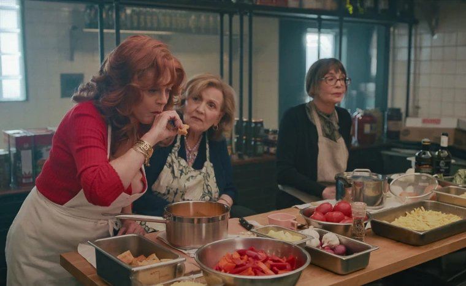
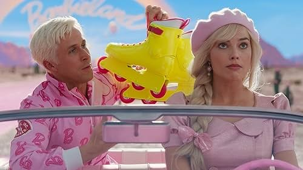

2026 年 Netflix 上最值得观看的 20 部喜剧

如果你正在寻找一部值得一看的喜剧，那你来对地方了!我们精心挑选了20部风格各异的喜剧，包括温馨的家庭喜剧、古怪的黑色幽默、甜蜜的浪漫喜剧、活泼的校园喜剧，以及创意十足的动画喜剧。
无论你喜欢哪种类型的Netflix喜剧，这些电影都能让你放松身心，享受完美的休闲时光。快来拿点爆米花，打开电视，准备迎接这个终极电影之夜吧!
1. 诺纳斯(2025)
母亲的去世让乔(文斯·沃恩饰)悲痛欲绝，不知所措。在妻子的鼓励下，他决定开一家意大利餐厅来纪念母亲。然而，为了重拾母亲记忆中的温暖，他聘请了母亲以前的理发师、修女和甜点师来经营餐厅。虽然他们并非专业的团队，但母亲的 "奶奶们"们 用她们的热情和真诚，为观众带来了别样的温暖和欢笑。
来源：今日秀
2. 老爸老妈(2023)
三位中年父亲——杰克(比尔·伯尔饰)、弗兰克(鲍比·坎纳瓦尔饰)和达伦(博基姆·伍德拜因饰) —— 被迫承担起养育子女的责任。他们传统的育儿方式与当今的育儿潮流发生了碰撞。在他们努力适应父亲角色的过程中，他们常常会遇到一些尴尬又滑稽的境地。
《老爸爸》幽默地突出了传统和现代育儿方式之间的冲突，以喜剧的视角展现了这些父亲如何努力跟上时代的步伐。
3. 我们是米勒一家(2013)
詹妮弗·安妮斯顿自《老友记》以来一直在探索各种喜剧角色，而这部与杰森·苏戴奇斯联袂出演的电影，则呈现了一个充满荒诞与幽默的故事。电影讲述了一个小毒贩(苏戴奇斯饰)为了保护自己的生意，雇佣了一个 假家庭 帮助他从墨西哥走私毒品的故事。从海关检查到房车露营，从毒枭到意外结识的好友，这场"家庭公路之旅"充满危机，但也充满笑料。
在这段荒诞的公路之旅中，这些陌生人逐渐建立起如同家人般的情谊。影片充满了出人意料的反转和爆笑桥段，在荒诞与感人之间取得了完美的平衡。
4.《小鬼当家》(1990)
圣诞夜，八岁的捣蛋鬼凯文( 麦考利·卡尔金饰 )被家人意外地独自留在家中。两个狡猾的窃贼哈利(乔·佩西饰)和马夫(丹尼尔·斯特恩饰)计划当晚闯入家中，但凯文没能享受太久的自由。这个八岁的小男孩用熨斗、油漆罐和冰块等日常用品，设下一系列精心设计的陷阱，让窃贼们的生活变成了一场噩梦，也带来了无尽的笑料。
5.《天生一对》(1998)
《天生一对》也是一部聚焦儿童角色的家庭喜剧电影。林赛·罗韩一人分饰两角，饰演一对性格迥异的 双胞胎姐妹 。由于父母离异，姐妹俩从未见过面。在一次夏令营中，她们意外发现了彼此的身份，并想出了一个让父母重聚的计划。
影片巧妙地将家庭、成长、爱情等元素融合在一起，让观众在欢笑的同时，感受到亲情的力量。

6.《博物馆奇妙夜》(2006)
你有没有幻想过 博物馆在夜晚变得生机勃勃 ？博物馆的夜间保安拉里(本·斯蒂勒饰)目睹了夜幕降临时恐龙骨架在展厅里穿梭，古埃及法老施展法术，以及牛仔和罗马士兵之间的小型战争。面对博物馆夜间的混乱，拉里该如何应对？
这部充满幻想和笑声的家庭喜剧将带你踏上一场前所未有的夜间冒险。
7.《别抬头》(2021)
这部电影充满了讽刺、幽默和社会批判，以尖锐的讽刺方式将荒诞与现实融合，提高了人们对社会、政治和环境问题的认识。
两位天文学家凯特(詹妮弗·劳伦斯 饰)和兰德尔(莱昂纳多·迪卡普里奥 饰)在观测过程中发现了一颗巨大的彗星。彗星的轨迹表明它将与地球相撞，造成 全球灾难 。由于政府的漠视和媒体的冷漠反应，他们被迫使用各种科学方法来让世界意识到这一威胁的严重性。
8.《麻烦》(2024)
一位离异的电子产品销售员意外目睹了一场暴力入室抢劫，却因此蒙冤 入狱 。他被迫与女儿分离，决定参加一场意想不到的越狱行动。在生死攸关的逃亡和无情的追捕中，他不仅要逃脱，还要揭开真相，洗清罪名，并与女儿团聚。这是一场关乎父爱、正义和生存的紧张战斗。他能否洗清罪名，并与女儿团聚？
9.《触不可及》(2011)
《触不可及》(2011)是一部根据 真实故事 改编的法国喜剧电影，探讨种族、阶级和尊重等重要的人生主题。
影片中，富豪菲利普(弗朗索瓦·克鲁塞饰)在一次滑翔伞事故后腰部以下瘫痪，需要一位贴身护工。在众多优秀的申请者中，他选中了刚出狱的黑人青年德里斯(奥马尔·希饰)。
这个决定意外地让两人的伤痛得以 治愈 。德利斯对菲利普的尊重帮助他逐渐接受新的现实，重新发现自我。反过来，菲利普也影响了德利斯，让他看到了责任、信任和友谊的力量。
10. 复仇 (2022)
面对 校园欺凌 ，达莉亚(卡米拉·门德斯饰)和埃莉诺(玛雅·霍克饰)不愿默默接受现实。她们决定交换复仇目标，并制定了一系列计划来报复那些欺凌者。然而，随着计划的展开，埃莉诺发现达莉亚正是毁掉她小学生活的那个女孩。两人最终会和好吗？
《复仇》是一部充满幽默和反思的电影。影片通过一系列神秘事件和不断的反转，让观众对故事的结局充满猜测。
11. 乌龙小姐 (2020)
蒂姆·莫里斯(大卫·斯佩德饰)与两位名叫米西的女子相亲——一位优雅精致(莫莉·西姆斯饰)，另一位则狂野古怪(劳伦·拉普库斯饰)。在一次公司休假期间，蒂姆意外邀请了 狂野的米西 。她难以捉摸的行为让整个行程天翻地覆。但随着与她相处的时间越来越长，蒂姆开始发现她独特的魅力，并逐渐爱上了她。
《乌龙小姐》将喜剧与爱情巧妙融合，带来轻松愉悦的观影体验。故事情节既搞笑又甜蜜，是一部轻松愉悦的浪漫喜剧，非常适合轻松愉快地观看。
12.随波逐流(2011)
《随波逐流》是一部轻松浪漫的喜剧，非常适合寻求轻松愉悦娱乐的观众。影片中，詹妮弗·安妮斯顿饰演一位 假扮亚当·桑德勒角色前妻 的女子。他们带着"孩子们"踏上了一段混乱又爆笑的夏威夷之旅。
安妮斯顿的表演广受好评，并荣获MTV电影奖和青少年选择奖提名。如果你是《老友记》中瑞秋的粉丝，这部电影绝对值得一看。
来源：烂番茄
13. 诺丁山(1999)
主演休·格兰特和朱莉娅·罗伯茨 之间的银幕化学反应绝对会让你着迷。他们的搭档堪称 视觉盛宴。 但真正让这部电影令人无法抗拒的不仅仅是他们的外表，还有那段意想不到的浪漫爱情故事。
一位普通书店老板(休·格兰特 饰)在伦敦诺丁山街头邂逅了一位举世闻名的电影明星(朱莉娅·罗伯茨 饰)，在命运的指引下，他们展开了一段感人至深的爱情故事。

14.芭比娃娃(2023)
2023年夏天，童年偶像芭比娃娃在真人电影中重现人间。玛格特·罗比饰演的芭比生活在一个人人羡慕的 完美世界 ，但她总觉得内心缺少了些什么。为了改变人生，她和男友肯(瑞恩·高斯林饰)冒险进入了这个不完美的现实世界。在这里，面对 社会压力 ，芭比逐渐在现实世界中找到了自身的价值。
芭比娃娃一直代表着理想化的完美形象，而这部电影从现实世界的角度重新定义了女性面对社会压力的力量。
15. 毕业季(2022)
想象一下，一觉醒来，发现自己已经37岁而不是17岁了？17岁的高中生斯蒂芬妮昏迷了 20年 。醒来后，她试图重返校园，弥补失去的青春岁月。尽管身体和心态都发生了巨大的变化，但她还是决定重返校园，重新找回失去的青春。
导演亚历克斯·哈德曼以幽默的方式探讨了人生第二次机会的重要性以及青春期成长的过程，引发了人们对个人成长意义的思考。
16.《亲吻亭》(2018)
《亲吻亭》探讨了青少年情感的复杂性和困惑，深入探讨了友情、爱情和亲情之间微妙的平衡。影片讲述了艾丽(乔伊·金饰)和她最好的朋友的哥哥诺亚(雅各布·艾洛蒂饰)的故事，以及他们卷入学校"亲吻亭"活动后产生的复杂情感纠葛。这是一部充满 青春活力 和 纯真爱情 的成长电影。
17.《贱女孩》(2004)
《贱女孩》由21世纪初最炙手可热的青少年女演员之一林赛·罗韩主演，讲述了一个天真的少女逐渐被虚荣吞噬，最终觉醒并 自我救赎 的故事。影片生动地刻画了少女们在面对突如其来的社会阶层转变时所经历的心理挣扎和成长。罗韩的表演自然生动，展现了她一路走来所面临的精神压力和转变。
18. 克劳斯 (2019)
《克劳斯：圣诞节的秘密》是一部温馨而富有创意的圣诞动画电影，讲述了一个不情愿的邮递员和一个孤独的玩具制造商结下意想不到的友谊，共同创造圣诞老人的传说的故事。
导演塞尔吉奥·巴勃罗斯和戈尔·维宾斯基巧妙地将幽默与感人的情感元素融合在一起，精心打造了一个关于 自我牺牲 和 无私奉献 的故事。
19. 米切尔一家 vs. 机器一家 (2021)
《米切尔一家对抗机器》巧妙地将家庭主题与高科技反乌托邦世界结合在一起。影片讲述了一个古怪的家庭必须团结起来，共同对抗 全球机器人起义 的故事。
影片通过对科技和现代生活的幽默讽刺，探讨了家庭动态，重点关注父亲和女儿之间的差距和理解。
20.《疯狂原始人》(2013)
《疯狂原始人》探索了一个古老家族在适应新环境和应对外部威胁过程中的幽默和成长，同时也凸显了家庭成员之间的爱与支持。这部色彩缤纷、充满冒险的动画电影充满了笑料，非常适合 全家一起观看 。它还通过对家庭价值观和个人成长的探索，引发了深刻的情感共鸣。
来源：烂番茄
环球巴士订阅奈飞
环球巴士 是一个全天候数字订阅共享平台，致力于帮助用户节省各种数字订阅费用。无论你是经常使用流媒体平台，还是需要 AI 助手来提升效率，环球巴士 都能为你提供经济实惠的选择。
通过 环球巴士 订阅 Netflix，你最多可节省 72% 的月费。以下是价格和功能的比较：
| 计划 | 每月价格 | 广告 | 额外会员席位 | 视频质量 |
|---|---|---|---|---|
| 标准版(含广告) | 7.99 美元 | ✔️ | 0 | 全高清(1080p) |
| 标准 | 17.99 美元 | ❌ | 1 | 全高清(1080p) |
| 优质的 | 24.99美元 | ❌ | 3 | 4K + HDR |
| 环球巴士 | 33 元（RMB） | ❌ | 0 | 4K + HDR |
此外，环球巴士是一个高度可靠的平台，高度重视用户的隐私和安全。它确保你的帐户在整个使用过程中始终安全稳定，让你安心享受订阅服务。
常问问题
1. Netflix 哪部剧的评分为 9.5？
截至2025年7月，IMDb评分达到9.5的电视剧是《绝命毒师》，该剧讲述了一位普通的高中化学老师逐渐成为制毒和犯罪巅峰的故事。
2. Netflix 上今天有什么热门节目？
《鱿鱼游戏》第三季是目前Netflix上最受欢迎的剧集，自6月27日上映以来，全球累计观看次数达6010万次，累计播放时长达3.684亿小时，连续五天登顶Netflix全球排行榜。
3. 目前 Netflix 上最好的真实故事是什么？
Netflix 上最受好评的真正基于真实事件的电影是《泰坦：海门灾难》。该片通过对幸存者的采访、海岸警卫队的证词、内部录音和档案录像，完整重现了这次深海任务的技术失误。